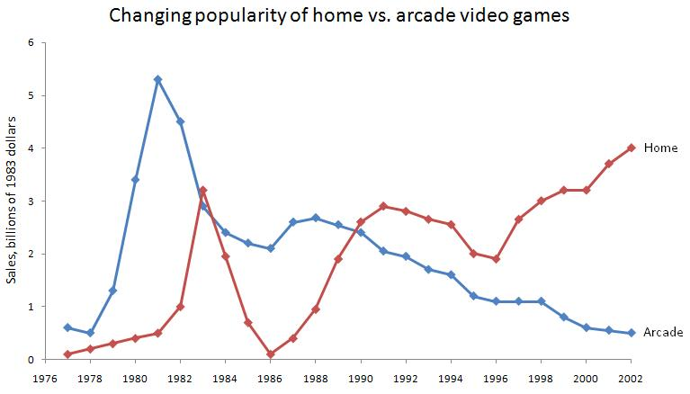

The videogame crash of 1983
The videogame crash of 1983 (in Japan is known as the Atari crash), is an event happened between the end of 1983 and the beginning of 1984 that crippled the North American and Canadian videogame market.
Why did the crash happen?

Contrary to popular belief, the causes of the crash weren't limited to a really bad game,
but they were a mix of poor decisions and greediness.
The videogame industry became really popular between 1978 and 1983 surpassing
the profits of the American Movie and Music industry combined, in this time Atari
was the dominant company with the Atari 2600
making its position seemingly impossible to change with his
more than 8 million users.1
Here the problems started to arise, many new companies began to produce home consoles to try to get a slice of Atari's profits and competing with them made the prices drop. In the meantime, third-party developers (like Activision, founded by former Atari programmers)2 started to make a lot of games, many of really poor quality, for the newly released consoles to try and make a profit out of consoles manufacturers success since consoles had no lock for third-party titles. At that time, the PCs were starting to gain popularity too with their double business and gaming possibilities supported by long-term memories that allowed gamers to save their progress instead of starting from the beginning every time.
To counteract this "forced" drop in prices Atari decided to make ports of famous arcade games to try sell more 2600 and cartridges like they already did previously with space invaders and missile command. In 1982 an abysmal port of pac-man sold incredibly well shipping around 7 million copies despite it being rushed. But here is where the flaws in Atari's strategy began to appear, despite selling that much the company still had 5 million copies left over that were never sold, more than all the copies sold by Activision with Pitfall, the second best-selling game. The copies of pac-man made were also more than all the 2600 sold until then, since Atari thought that the game would've made at least 2 million people wanting to buy a console.2
After this apparent success Atari's business executives signed a deal with Steven Spielberg
to make an ET game. ET promised to be one of the biggest movies of the year, it was
thought that a game based on it would sell really well, so Atari payed
Spielberg 25 million up front to get the rights of the movie.
All in all not a bad decision if the game was gonna repay itself,
but to hit a Christmas deadline Atari forced the game to be completed in a
little more than 5 weeks. If that wasn't enough, even if pac-man was the only
game to sell more than 5 million copies in the history of the company, the copies
ordered to be produced were more than 6 millions believing that the name alone would've
sold all of them if not more.
Needless to say this wasn't the case, maybe stung by the pac-man flop of the previous
year, consumers waited to buy ET to check if the game was any good, and it wasn't. This resulted in almost
nobody buying it and Atari was again in the same situation as with pac-man with more than 5 million copies
sitting in the warehouse and condemning the game to become known as the worst game in history
and the game that single-handedly destroyed the videogame market.3
Atari was making horrible games and selling them full-price, in the meantime, third-party developers were also horrible games, but selling them cheaply so no one bought Atari's games anymore.
And then there was the nail in the coffin, in 1982's earning statements Atari told shareholders that despite the bad year the company would've still grown by 10-15%. Great if they hadn't already said that the expected grow was going to be around 50%, and so everything fell apart. Atari's stocks fell in value, making Warner Communications lose millions and consoles and games sells tanked. Legend has that Atari,unable to sell all the millions of cartridges made, buried them in a landfill in New Mexico (legend partially confirmed by a 2013 documentary made by Xbox Entertainment).4 In the end the company was 500 million dollars in debt and the whole industry that just a year before was valued 11.8 billion dollars lost 97% of its value settling at 100 million.5
After the crash
Even if it's called "videogame crash", it was more of a console problem only. PCs and arcades didn't stop growing and kept afloat, many companies, but analysts were together in saying that it was over, investors and retailers should look elsewhere and that gaming consoles were never a really good idea.
They knew that in Japan a little company called Nintendo, after the success of the Famicon in their homeland, was thinking that maybe the cause of the crash wasn't the concept of a dedicated gaming system; maybe it was just what it was, a series of bad decisions and greediness. And so they tried to launch the Famicon in America too, but trying to avoid the same mistakes Atari made.
First of all they locked their system down, every game would've been either produced or approved by Nintendo before being released and would've worked only if it had a special chip in it that only Nintendo could provide. This helped them financially too, since (unlike the previous consoles) a game would've needed to have the chip third-party developers had to pay a royalty fee to publish a game for their console. Nintendo also changed the name of the Famicon to NES (Nintendo Entertainment System) and also his appearance, from colourful to a more industrial grey and cartridges were hid away instead of being on the outside to "trick" consumers.
The rest, as they say, is history. Despite Wall Street's failure previsions, the NES saved the American Console market and became an icon proving that the consoles were never really dead and paved the way for future companies.
In a way is thanks to the videogame crash of 1983 that the industry is so strong today.
External Links
- [Visited on 04/11/2014] Inside Gaming Daily
- [Visited on 06/11/2014] Game crash Wikipedia
- [Visited on 05/11/2014] Tv Tropes
- [Visited on 06/11/2014] CNN article on the Atari burial
- [Visited on 06/11/2014] Den Of Geek
- [Visited on 06/11/2014] Pictures of the dug up games
- [Visited on 05/11/2014] Link to the original graph
All images are fair use intended.